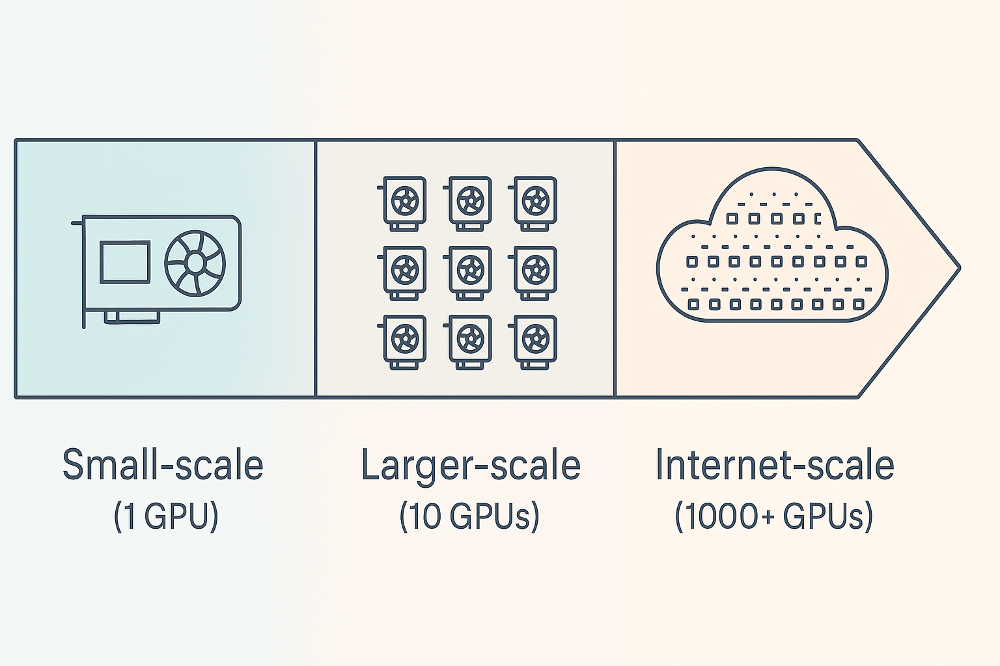

At university, in online blogs, and across tutorials, training machine learning models is often well explained—especially for small-scale setups. These typically involve datasets that fit on a local hard drive, training on a single GPU, and straightforward implementations without worrying about fast data loading, datasets that do not fit onto a local hard drive (lazy loading), or multi-GPU utilization/optimization.
However, when transitioning to a larger setup —not massive SOTA-scale training across thousands of GPUs with internet-scale data, but something in between— good resources are harder to find and are scattered around. I call this the "larger-scale training" realm: working with datasets that are a few terabytes (too large for local storage but far from internet-scale) and training across multiple GPUs (around 10, not 100s or 1000s).

Illustration of larger-scale training
I am currently a Machine Learning Intern at OceanOS, where I am building a geospatial foundation model to improve marine intelligence and ocean conservation. For my research, I need to scale up my training to this realm, but I struggle to find practical, well-structured guides on bridging the gap from small-scale to mid-sized, high-performance training. This larger-scale training" is where a lot of valuable research and development happens, yet optimization and implementation for this space are harder to figure out. Maximizing hardware efficiency at this level can significantly reduce training time, costs and environmental impact.
This guide is for those stepping into this space —researchers and practitioners who want to scale their training beyond a single GPU while making the most of the resources they have. My experience comes from working with geospatial data, so some examples may be domain-specific, but the core principles apply broadly across all machine learning applications that make use of pytorch.
I want to note that this is not a definitive guide on how everything should be done. Instead, it's a collection of challenges I faced and the solutions I found along the way. I encourage you to ask questions, share feedback, and suggest improvements — the goal is to learn from each other and train more efficiently every day :)
This blog is available on GitHub as well as my website. For every chapter, I created a folder on GitHub with all full code. The markdown files are available on both platforms, containing text and code examples.
I'll walk you through my process of implementing and optimizing everything. Each chapter folder contains code examples that demonstrate the concepts discussed in the corresponding markdown file. To run the examples, navigate to the specific chapter folder on GitHub and follow the instructions as specified in the markdown files. I strongly advise to run through them in order, as they build on top of each other and I expect previous chapters as background knowledge for the following one. I especially encourage you to get familiar with pytorch lightning (1. The Setup) as it will streamline, improve and speed up your workflow a lot.
Clone the repository:
git clone https://github.com/CoenvdE/Training-at-larger-scale-blog.git
cd Training-at-larger-scale-blogInstall uv (if you haven't already):
pip install uvCreate a virtual environment and install dependencies:
uv venv
uv syncThis will create a virtual environment in .venv and install all necessary packages.
Run the code:
uv run python your_script.pyOptional: Set up a conda environment with Jupyter kernel:
# conda environment
conda create -n training-at-larger-scale python=3.12
conda activate training-at-larger-scale
pip install -r requirements.txt
python -m ipykernel install --user --name=training-at-larger-scale --display-name="Training at Larger Scale"You can now select the "Training at Larger Scale" kernel in Jupyter notebooks to use all the installed dependencies.
I would like to thank Laurens Geffert, Andrew Corbett and Joe Hamman for their helpful feedback and suggestions. I would like to thank OceanOS for supporting me in writing this blog and enabling me to focus on research. I would like to thank Mohammad Islam for his helpful feedback and suggestions.